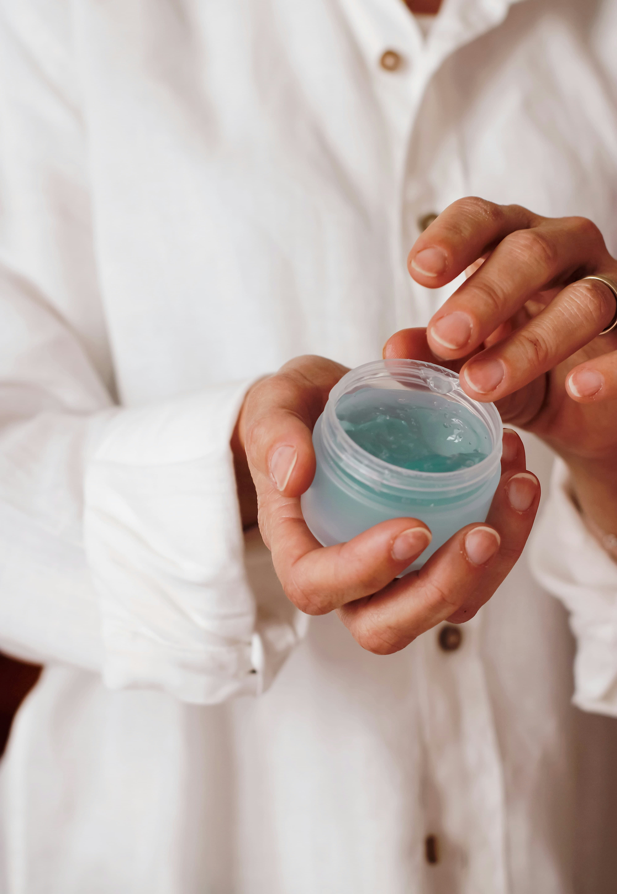

The 6 Metrics Omoggle Measures
Omoggle's AI scores faces on six distinct facial features, each contributing to your overall PSL score. Understanding each metric — what it is, how much it weighs, and how to improve it — is the foundation of effective looksmaxxing for Omoggle.
Metric 1: Facial Symmetry (~22% weight)
The highest-weighted metric. Measures how closely the left and right halves of your face mirror each other by comparing landmark positions: eye corners, nose tip, lip corners, and jawline points. Minor natural asymmetry (1–3%) is normal and minimally penalized. Significant asymmetry (5%+) meaningfully reduces your score. Full guide: facial symmetry guide.
How to improve: Correct postural asymmetry, sleep on your back, and optimize camera positioning to center your face precisely.
Metric 2: Canthal Tilt (~18% weight)
The angle of your eye corners — specifically whether the outer corner sits higher (positive) or lower (negative) than the inner corner. Positive canthal tilt is consistently associated with higher attractiveness ratings across cultures. Full guide: canthal tilt guide.
How to improve: Camera angle above eye level naturally emphasizes whatever positive tilt you have. Long-term: mewing and forward facial growth.
Metric 3: Jawline Definition (~18% weight)
Measures the sharpness and definition of the mandible (lower jaw) boundary. A defined, angular jawline scores higher than a soft or undefined one. Full guide: jawline guide.
How to improve: Reduce body fat percentage (most impactful), consistent gym training, mewing, and gym face training.
Metric 4: Cheekbone Prominence (~16% weight)
Measures how high and defined the zygomatic bones (cheekbones) appear relative to the lower face. High cheekbones create a triangular facial structure that scores well on the PSL Scale. The cheekbone-to-jaw ratio is a key proportion measurement.
How to improve: Body fat reduction reveals cheekbone structure. Camera angle from above also emphasizes cheekbone prominence.
Metric 5: Skin Clarity (~14% weight)
Measures skin evenness, texture, redness, and overall surface quality. Clear, even-toned skin scores higher than textured, uneven, or reddened skin. This is the most rapidly improvable metric. Full guide: skincare guide.
How to improve: Consistent skincare routine (cleanser, niacinamide, SPF), adequate sleep, and hydration produce visible results in 4–6 weeks.
Metric 6: Overall Facial Harmony (~12% weight)
A composite metric measuring how well all facial features work together in proportion — the ratio of facial thirds, nose-to-face-width ratio, lip fullness relative to face size, and golden ratio facial proportions. This metric is largely genetic and structural.
How to improve: Camera setup and framing adjustments can optimize how the AI reads your proportions. Beyond that, harmony is improved indirectly by improving all other metrics.
See your scores on all 6 metrics right now — our free AI Face Analyzer measures every one of these features individually and tells you exactly where to focus.